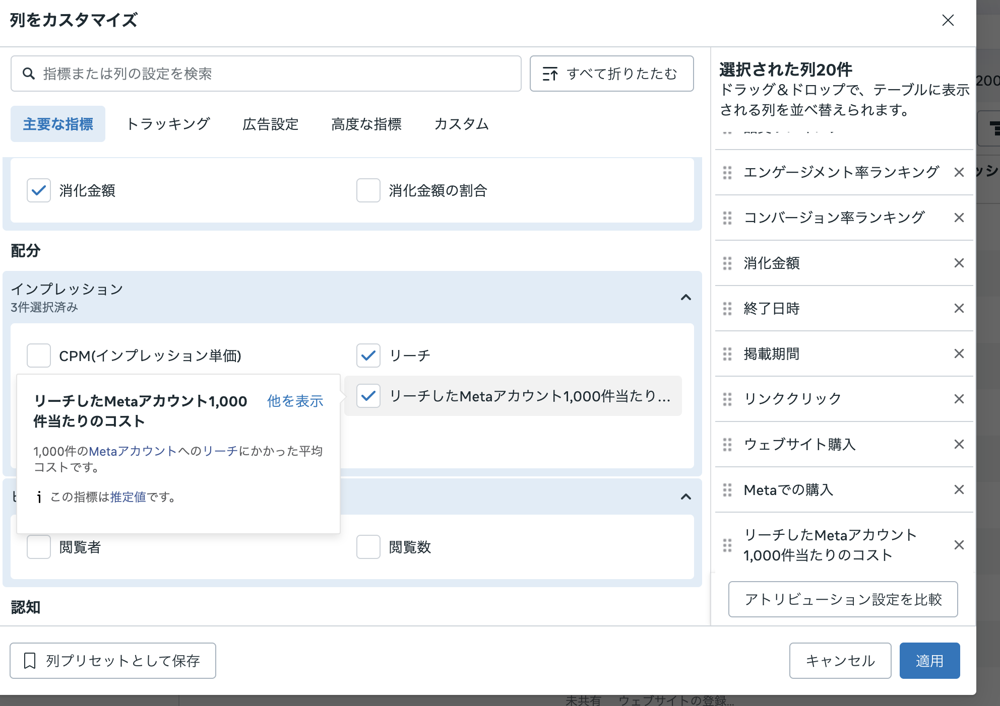

Meta広告を運用していると、ついCPAばかりを見てしまいます。「CPAが合っているか」「CVが取れているか」「ROASが合っているか」。もちろん、これらは大事です。
ただ、最近のMeta広告では、CPAだけを見ていると判断を間違えるケースが増えています。AIによる配信最適化が進むほど、広告は成果の出やすい人に寄りやすくなります。その結果、短期的にはCPAが良く見えても、実は同じ人に何度も広告が当たっていて、新しい人に広がっていないことがあります。
この記事で言いたいことを、先に一言で
CPAが良い広告でも、必ずしも「伸ばせる広告」とは限りません。
Meta広告はAI配信によって、CVしやすい人へ効率よく配信されやすくなっています。これは広告主にとって便利な一方で、配信が「すでに反応しやすい人」や「同じ人」へ寄りやすくなることもあります。
その状態でCPAだけを見ると、短期的には良く見えても、実は新しい人に広がっていない可能性があります。予算を増やした瞬間に効率が崩れるのは、このパターンです。
だからこそ見るべきなのが、リーチ単価です。リーチ単価を見ると、「広告費をかけたときに、どれくらい新しい人へ広がれているか」が見えやすくなります。この記事では、そのリーチ単価に近い考え方としてCPMrを使い、CPM・CPMr・CVRを組み合わせて広告を分類します。
まず見る数字の役割
| 指標 | ざっくり意味 | 見る理由 |
|---|---|---|
| CPM | 1,000回表示する値段 | 高い面・安い面、どんな場所に出ているかを見る |
| Frequency | 1人に平均何回見せたか | 同じ人に当たりすぎていないかを見る |
| CPMr | 1,000人に届く値段 | 新しい人に広がっているかを見る |
| CVR | 届いた/来た人がCVする確率 | 配信先と訴求の質を見る |
| CPA | 1CVあたりの獲得単価 | 最終的に採算が合っているかを見る |
まずCPMとは何か
CPMとは、広告を1,000回表示するためにかかった費用です。つまり、広告表示の単価です。
ただし、CPMは単体で「高いから悪い」「安いから良い」と判断してはいけません。CPMは、あくまでどんな場所・どんな人に広告を出せているかの値札です。
CVしやすい人や競争の激しい広告面に出ていれば、CPMは高くなりやすいです。一方で、広い層や安い広告面に出ていれば、CPMは安くなりやすいです。
CPMはCVRとセットで見る
CPMを見るときに、必ずセットで見たいのがCVRです。CVRは、クリックやLP訪問から購入・申込・登録などに至った割合です。
A：CPM 2,000円 / CVR 5%
B：CPM 800円 / CVR 1%CPMだけ見るとBが安くて良さそうに見えます。でも、CVRまで見ると、Aの方が良い広告である可能性もあります。Aは高い面に出ているが、買いやすい人に届いている。Bは安く表示できているが、買う可能性が低い人に届いているかもしれません。
| 状態 | 意味 | 評価 |
|---|---|---|
| CPM高い × CVR高い | 質の高い配信面・相手に出ている | 良い高CPM |
| CPM高い × CVR低い | 高いのに成果につながっていない | 悪い高CPM |
| CPM安い × CVR高い | 安く、買いやすい人に届いている | お宝 |
| CPM安い × CVR低い | 広いが買う確度は低い | 種まき、または質が低い配信 |
CPMだけでは「新しい人に届いているか」が分からない
ここでもう一つ重要なのが、CPMrです。CPMrは、ざっくり言うと「1,000人にリーチするためのコスト」です。
CPMr ≒ CPM × フリークエンシー
たとえばCPMが1,000円で、フリークエンシーが2回なら、1,000人に届くためのコストは概算で2,000円です。フリークエンシーが4回なら、同じCPMでもCPMrは4,000円になります。
つまり、CPMが同じでも、同じ人に何度も広告が当たっていれば、新しい人に届くコストは高くなっているのです。
CPAが悪化する前に、CPMrが悪化している
Meta広告でよくあるのが、CPAが悪化する前に、先にCPMrが悪化しているケースです。
フリークエンシーが上がる
同じ人に何度も広告が出る
リーチの伸びが鈍る
CPMrが悪化する
新しい人に届きづらくなる
最後にCPAが悪化するCPAだけを見ていると、異変に気づくのが遅くなります。CPMrは、「新しい人に届きづらくなっているかもしれない」という早めのアラートとして使えます。
見る順番はこの流れでOK
- まずCPAを見る。採算が合っている広告と、明らかに厳しい広告を分けます。
- 次にCVRを見る。CPAが良い理由が、単にクリック単価が安いからなのか、ちゃんとCVしやすい人に刺さっているからなのかを確認します。
- 次にCPMを見る。CPMが高い広告は、競争の強い面や質の高い面に出ている可能性があります。逆にCPMが安い広告は、安く広く出せている一方で、質が低い面に寄っている可能性もあります。
- 次にCPMrを見る。CPAやCVRが良くても、CPMrが高ければ、同じ人・濃い人に寄っている可能性があります。逆にCPMrが安ければ、新しい人へ広げる余地があるかもしれません。
- 最後にCPMとCPMrで4分類する。伸ばす広告、守る広告、掘る広告、見守る広告に分けます。
CPMとCPMrで広告を4つに分類する
刈り取り寄り・伸びにくい
高い広告枠で、しかも同じ人に何度も当たっている状態です。CVRは高くなりやすい一方で、新規リーチは伸びにくいです。
扱い：CPAが良ければ維持。ただし、増額は慎重に。
伸ばす候補
競争の強い面やCVしやすい人に出つつ、同じ人に偏らず広くリーチできている状態です。
扱い：最優先で伸ばす。予算増額や類似訴求の横展開を検討。
掘る候補
安く表示できているけれど、配信が狭く偏っている状態です。新しいオーディエンスに対して小さな勝ち筋を見つけている可能性があります。
扱い：訴求、動画冒頭、画像、コピーを分解して横展開。
種まき候補
安く、広く、新しい人に届いている状態です。短期CVRやCPAは低く見えやすいですが、認知拡大の役割があります。
扱い：短期CPAだけで切らず、後日CVや再接触を見る。
Meta広告マネージャーで列をカスタマイズする方法
CSVを出す前に、まずMeta広告マネージャー上で表示する列を整えます。ここで必要な指標を入れておくと、後からCPM・CPMr・CVRで分類しやすくなります。

2. CPMrに近い指標を選ぶ 3. 最後に「適用」自社データで実際に見てみた
実際に、2026年4月7日から2026年5月6日までの自社Meta広告データを使って、この考え方で分類してみました。今回はノイズを減らすため、広告費10,000円以上、リーチ1,000以上、CV1件以上の45件を判定対象にしています。
| 基準 | 今回の中央値 | 見方 |
|---|---|---|
| CPM | 3,326円 | これ以上をCPM高、未満をCPM安として分類 |
| CPMr | 4,836円 | これ以上をCPMr高、未満をCPMr安として分類 |
| CVR | 13.6% | LPV基準で、訴求や配信先の質を見る補助指標 |
| CPA | 1,393円 | 最終的な獲得効率を見る基準 |
まず全体で見ると、判定対象45件のうち、CPM高 × CPMr高の「刈り取り寄り・伸びにくい」広告が19件、CPM高 × CPMr安の「伸ばす候補」が4件、CPM安 × CPMr高の「掘る候補」が4件、CPM安 × CPMr安の「種まき候補」が18件でした。
| 分類 | 件数 | 広告費 | CV | CPA | 見立て |
|---|---|---|---|---|---|
| 1 刈り取り寄り・伸びにくい | 19件 | 1,085,751円 | 706件 | 1,538円 | 成果は出るが、リーチ効率は重い |
| 2 伸ばす候補 | 4件 | 283,861円 | 212件 | 1,339円 | 質の高い面で新規にも広がる |
| 3 掘る候補 | 4件 | 294,876円 | 221件 | 1,334円 | 狭く刺さっている可能性がある |
| 4 種まき候補 | 18件 | 971,185円 | 793件 | 1,225円 | 安く広く取れているものも混ざる |
今回一番重要な発見
今回のデータで一番面白かったのは、CPM安 × CPMr安の「種まき候補」に分類される広告の中に、CPAもCVRもかなり良いものがあったことです。つまり、単なる認知枠ではなく、安く広く届いて、実際にCVも取れている“お宝寄り”の広告が見つかりました。
| 広告 | CPA | CPM | CPMr | CVR | 見立て |
|---|---|---|---|---|---|
| 235【売れる企画】Phase3_長倉さん実写型 | 842円 | 2,372円 | 3,510円 | 22.3% | 横展開の最優先候補 |
| 246【売れる企画】Phase4_長倉さん実写型_短文テキスト | 859円 | 2,780円 | 4,152円 | 24.6% | 短文訴求の勝ち筋あり |
| meta327_電子書籍_CR105_動画16x9 | 542円 | 2,109円 | 3,162円 | 5.9% | CVRは低いがCPAが非常に強い |
| meta339_電子書籍_CR110_画像4x5 | 653円 | 2,180円 | 3,337円 | 13.6% | 安く広く届く勝ち筋 |
伸ばす候補として見る広告
CPMは高いものの、CPMrが安い広告は「質の良い面に出ながら、新規にも広がれている」可能性があります。今回のactive広告では、以下が伸ばす候補でした。
| 広告 | CV | CPA | CPM | CPMr | 見立て |
|---|---|---|---|---|---|
| 523【コンテンツビジネス】海外向け冒頭3 縦型 | 97件 | 1,551円 | 3,462円 | 4,230円 | 慎重に増額しながら検証 |
| 247【売れる企画】Phase4_長倉さん実写型_長文テキスト | 57件 | 1,227円 | 3,485円 | 4,664円 | 長文訴求の横展開候補 |
成果は強いが、増額は慎重に見る広告
一方で、CV数が多くてもCPM高 × CPMr高に入る広告は、すでに濃い層に寄っている可能性があります。短期成果は強いですが、増額するとフリークエンシーやCPMrが悪化し、CPAが崩れるリスクがあります。
| 広告 | CV | CPA | CPM | CPMr | 見立て |
|---|---|---|---|---|---|
| 600-601【コンテンツビジネス】海外向け冒頭3 縦型 | 155件 | 1,367円 | 4,355円 | 5,494円 | 主力だが刈り取り寄り |
| 220【売れる企画】ノンタゲ | 79件 | 1,143円 | 4,108円 | 6,412円 | 成果は強いが広がりに注意 |
| 224【売れる企画】220別タゲ | 71件 | 1,266円 | 4,366円 | 7,345円 | 頻度とCPMrを監視 |
今回の自社データからの打ち手
今回のデータを見る限り、最優先で横展開したいのは、235、246、247です。235と246はCPMもCPMrも安く、CVRも高いので、訴求・冒頭・クリエイティブ型を分解して別パターンを増やす価値があります。247はCPMは高いもののCPMrが安く、CVRも高いため、長文テキスト訴求の伸ばし候補です。
一方で、600-601、220、224は成果が強いものの、CPMrが高めです。ここは主力として残しつつ、増額は一気に行わず、FrequencyとCPMrの上昇を見ながら慎重に扱うのがよさそうです。
実務の判断ルール
| 分類 | 判断 | アクション |
|---|---|---|
| CPM高 × CPMr高 | 刈り取り寄り。伸びしろは限定的 | 維持。ただし増額しすぎない |
| CPM高 × CPMr安 | 質の高い新規に届いている | 最優先で伸ばす |
| CPM安 × CPMr高 | 狭い勝ち筋の芽がある | 訴求やクリエイティブを横展開 |
| CPM安 × CPMr安 | 安く広く届けられている | 種まき枠として後日貢献を見る |
特に注意すべきアラート
CPAはまだ悪くない
でもCPMrが上がっている
Frequencyも上がっている
リーチの伸びが鈍っているこれは危険です。今はCPAが合っていても、裏側では新しい人に届きにくくなっている可能性があります。この状態を放置すると、いずれCPAが悪化します。
まとめ
Meta広告では、CPAだけを見ていると判断を間違えることがあります。AI配信が進むほど、広告は成果が出やすい人に寄りやすくなります。その結果、短期的にはCPAが良くても、新規リーチが伸びていないことがあります。
CPMは、配信面や配信相手の値札。CVRは、その相手が買う確率。CPMrは、どれだけ広くユニークに届いているか。CPAは、最終的な獲得効率です。
この4つを分けて見ることで、広告の役割が見えてきます。短期で刈り取る広告なのか、今後の柱になる広告なのか、新しい勝ち筋の芽なのか、将来の顧客を増やす種まきなのか。その判断ができるようになると、Meta広告の運用はかなり変わります。